기계정비산업기사 (2017-05-07 기출문제)
1과목: 공유압 및 자동화시스템
1. 톱니바퀴처럼 생긴 한 쌍의 로터가 케이싱 내에서 맞물려 회전하며 유압유를 흡입 및 토출시키는 원리의 유압펌프가 아닌 것은?
- 기어 펌프
- 로브 펌프
- 터빈 펌프
- 트로코이드 펌프
(정답률: 54%)

2. 피스톤에 공기 압력을 급격하게 작용시켜 피스톤을 고속으로 움직이며, 이 때의 속도 에너지를 이용한 실린더는?
- 충격 실린더
- 로드리스 실린더
- 다위치제어 실린더
- 텔레스코프 실린더
(정답률: 75%)
3. 공유압회로 작성 방법 중 2개 이상의 기능을 갖는 유닛을 포위하는 선으로 맞는 것은?
- 실선
- 파선
- 1점 쇄선
- 2점 쇄선
(정답률: 75%)
4. 절대 압력을 올바르게 표현한 것은?
- 절대압력은 게이지 압력을 말한다.
- 절대압력은 표준 대기압력보다 항상 높다.
- 절대압력은 대기압을 '0'으로 하여 측정한 압력이다.
- 절대압력은 완전한 진공을 '0'으로 하여 측정한 압력이다.
(정답률: 69%)
5. 공기 압축기의 용량제어 방식이 아닌 것은?
- 고속제어
- 배기제어
- 차단제어
- ON-OFF 제어
(정답률: 48%)
6. 방향제어밸브의 연결구 표시방법 중 'R'이 의미하는 것은?
- 배출구
- 작업라인
- 제어라인
- 에너지 공급구
(정답률: 72%)
7. 다음 회로의 속도제어방식으로 옳은 것은?
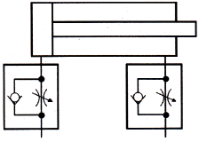
- 전진 시 미터인, 후진 시 미터인 제어회로
- 전진 시 미터인, 후진 시 미터아웃 제어회로
- 전진 시 미터아웃, 후진 시 미터인 제어회로
- 전진 시 미터아웃, 후진 시 미터아웃 제어회로
(정답률: 75%)
8. 내경 10cm, 추력 3140 kgf, 피스톤 속도 40m/min 인 유압실린더에서 필요로 하는 유압은 최소 몇 kgf/cm2 인가?
- 40
- 60
- 80
- 160
(정답률: 57%)
9. 두 개의 실린더를 동조시키는데 사용되며, 정확도가 크게 요구되지 않는 경우에 사용되는 밸브는?
- 감속 밸브
- 감압 밸브
- 체크 밸브
- 분류 및 집류 밸브
(정답률: 79%)
10. 유압에너지를 직선왕복운동으로 변환하는 기계요소는?
- 실린더
- 축압기
- 회전모터
- 스트레이너
(정답률: 82%)
11. 설비의 평균 고장률을 나타내는 것은?
- MTBF
- MTTR
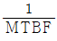
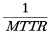
(정답률: 72%)
12. 다음 그림과 같은 타이밍 차트(timing chart)에서 입력이 A와 B이며, 출력은 Y일 때 이 타이밍 차트는 어떤 회로인가? (단, 입ㆍ출력 모두 양논리로 동작한다.)
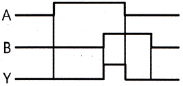
- OR 회로
- AND 회로
- NOT 회로
- NAND 회로
(정답률: 78%)
13. 짧은 실린더 본체로 긴 행정거리를 낼 수 있는 다단 튜브형 로드로 구성되어 있는 실린더는?
- 충격 실린더
- 로드리스 실린더
- 텔레스코프 실린더
- 다위치 제어 실린더
(정답률: 81%)
14. 직류 전동기의 구성 요소로 토크를 발생하여 회전력을 전달하는 요소는?
- 계자
- 브러시
- 전기자
- 정류자
(정답률: 59%)
15. 자동화시스템을 구성하는 각 단위기기를 하드웨어 및 소프트웨어적으로 연결하는 방법을 의미하는 것은?
- 네트워크(network)
- 프로세서(processor)
- 액추에이터(actuator)
- 메카니즘(mechanism)
(정답률: 78%)
16. 회전량을 펄스수로 변환하는데 사용되며 기계적인 아날로그 변화량을 디지털량으로 변환하는 것은?
- 서보 모터
- 포토 센서
- 매트 스위치
- 로터리 인코더
(정답률: 65%)
17. 되먹임 제어계(feedback control system)의 특징이 아닌 것은?
- 전체 제어계는 항상 안전하다.
- 목표값에 정확히 도달할 수 있다.
- 제어계의 특성을 향상 시킬 수 있다.
- 외부 조건 변화에 대한 영향을 줄일 수 있다.
(정답률: 72%)
18. 공압 시스템에 있어서 윤활유 등과 섞여 에멀션(emulsion) 상태나 수지 상태가 되어 밸브의 동작을 가로막을 우려가 있는 고장은?
- 수분으로 인한 고장
- 이물질로 인한 고장
- 공급 유량 부족으로 인한 고장
- 배관 불량에 의한 공기의 유출로 인한 고장
(정답률: 66%)
19. PLC 프로그램의 최초 단계인 0스텝에서 최후스텝까지 진행 하는데 걸리는 시간은?
- 리드 타임(read time)
- 스캔 타임(scan time)
- 스텝 타임(step time)
- 딜레이 타임(delay time)
(정답률: 61%)
20. 열팽창 계수가 다른 두 개의 금속판을 접합시켜 온도 변화에 따른 변형 또는 내부 응력을 이용한 센서는?
- 홀 센서
- 바이메탈
- 서미스터
- 측온 저항체
(정답률: 62%)
2과목: 설비진단관리 및 기계정비
21. 설비종합효율을 산출하기 위한 공식으로 옳은 것은?
- 설비종합효율 = 공정효율 × 수율 × 양품율
- 설비종합효율 = 공정효율 × 시간가동률 × 양품률
- 설비종합효율 = 시간가동률 × 성능가동률 × 양품률
- 설비종합효율 = 시간가동률 × 수율 × 양품률
(정답률: 76%)
22. 윤활관리의 효과에 대한 설명으로 틀린 것은?
- 동력비의 증가
- 제품 정도의 향상
- 보수 유지비의 절감
- 기계 정도와 기능의 유지
(정답률: 68%)
23. 진동을 측정할 때 회전하는 축을 기준으로 진동센서를 부착하여 측정하려고 한다. 진동측정방향이 아닌 것은?
- 축 방향
- 수직 방향
- 경사 방향
- 수평 방향
(정답률: 80%)
24. 진동 차단기의 재료로 합성고무를 사용했을 때 강철 코일스프링보다 유리한 점은 무엇인가?
- 정적변위가 크다.
- 주파수 폭이 넓다.
- 고온강도에 강하다.
- 측면으로 미끄러지는 하중에 강하다.
(정답률: 79%)
25. 직접적인 공기의 압력변화에 의한 유체역학적 원인에 의해 난류음을 발생시키는 것은?
- 압축기
- 송풍기
- 진공펌프
- 엔진 배기음
(정답률: 63%)
26. 고유 진동수와 강제 진동수가 일치 할 경우, 진동이 크게 발생하는 현상을 무엇이라 하는가?
- 울림
- 공진
- 외란
- 상호 간섭
(정답률: 86%)
27. 진동센서를 설비에 설치하는 경우, 정확도와 장기적 안정성이 가장 좋은 설치 방법은?
- 자석 고정
- 밀랍 고정
- 나사 고정
- 에폭시 고정
(정답률: 82%)
28. 정현파 진동에서 진동의 상한과 하한의 거리를 무엇이라고 하는가?
- 변위
- 속도
- 가속도
- 진동수
(정답률: 78%)
29. 다음 그림은 설비관리 조직 중에서 어떤 형태의 조직인가?
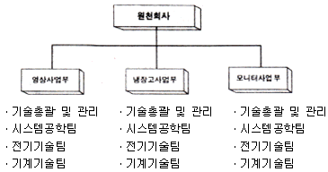
- 제품중심 조직
- 기능중심 조직
- 설계보증 조직
- 제품중심 매트릭스 조직
(정답률: 67%)
30. 효율적인 설비보전 활동을 위하여 설비의 열화나 고장, 성능 및 강도 등을 정량적으로 계측하여 설비의 상태를 예측 할 수 있는 기술은?
- 신뢰성 기술
- 정량화 기술
- 설비 진단 기술
- 트러블슈팅 기술
(정답률: 76%)
31. 설비투자의 합리적인 투자결정에 필요한 경제성 평가방법이 아닌 것은?
- MAPI법
- 자본 회수법
- 비용 비교법
- 처분 가치법
(정답률: 71%)
32. 보전작업표준을 설정하고자 할 때 사용하지 않는 방법은?
- 경험법
- 공정 실험법
- 작업 연구법
- 실적 자료법
(정답률: 65%)
33. 속도센서로 널리 사용되는 동전형 속도 센서의 측정원리로 옳은 것은?
- 압전의 법칙
- 렌쯔의 법칙
- 오른나사의 법칙
- 패러데이의 전자유도 법칙
(정답률: 73%)
34. 만성로스의 대책으로 틀린 것은?
- 현상의 해석을 철저히 한다.
- 관리해야 할 요인계를 철저히 검토한다.
- 원인이 명확하므로 표면적인 요인만 해결한다.
- 요인 중에 숨어 있는 결함을 표면으로 끌어낸다.
(정답률: 81%)
35. 설비보전에서 효과 측정을 위한 척도로서 널리 사용되는 지수 중 고장 도수율의 공식은?
- (정미가동시간/부하시간) × 100
- (고장횟수/부하시간) × 100
- (고장 정지시간/부하시간) × 100
- (보전비 총액/생산량) × 100
(정답률: 65%)
36. 물 또는 적당한 액체를 가득 채운 유리관속에서 유적이 서서히 떠올라오게 하는 급유기를 사용한 것으로서 급유상태를 뚜렷이 볼 수 있는 이점이 있는 급유법은?
- 패드 급유법
- 유륜식 급유법
- 강제 순환 급유법
- 가시 부상 유적 급유법
(정답률: 75%)
37. 디지털 신호처리에서 일반적으로 데이터의 경향을 제거하는 방법으로 옳은 것은?
- 최소 자승법
- 최대 자승법
- 이산적 신호법
- 데이터 주밍법
(정답률: 47%)
38. 다음 중 보전용 자재의 특징으로 옳은 것은?
- 연간 사용빈도가 많고 소비속도가 빠르다.
- 베어링, 그랜드 패킹 등은 교체 후 재활용 할 수 있다.
- 설비개선, 설비변경 등으로 불용자재가 발생하지 않는다.
- 자재구입의 품목, 수량, 시기에 관한 계획을 수립하기 곤란하다.
(정답률: 61%)
39. 윤활유 사용 중에 거품이 발생하지 않도록 해주는 첨가제는?
- 청정제
- 소포제
- 분산제
- 유동점 강하제
(정답률: 82%)
40. 고장이 없고, 보전이 필요치 않은 설비를 설계, 제작하기 위한 설비보전 방법은?
- 사후 보전(BM)
- 생산 보전(PM)
- 개량 보전(CM)
- 보전 예방(MP)
(정답률: 60%)
3과목: 공업계측 및 전기전자제어
41. 도수법으로 60도인 각도를 호도법(rad)으로 환산하면?
- π/4
- π/3
- π/2
- π
(정답률: 71%)
42. 과전류 계전기가 트립된다면 그 원인은?
- 과부하
- 퓨즈용단
- 시동스위치 불량
- 배선용 차단기 불량
(정답률: 63%)
43. 국제단위계(SI)에서 사용되는 기본 단위가 아닌 것은?
- 시간
- 부피
- 질량
- 광도
(정답률: 66%)
44. 전자가 자유로이 이동할 수 있는 에너지 준위대를 무엇이라 하는가?
- 금지대
- 충만대
- 일함수
- 전도대
(정답률: 82%)
45. 다음 중 공업량의 계측에 필요한 비접촉방식의 온도계는?
- 저항 온도계
- 열전 온도계
- 방사 온도계
- 서미스터 온도계
(정답률: 71%)
46. 논리회로의 불 대수
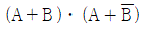
를 간략화한 것은?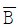
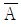
- B
- A
(정답률: 68%)
47. 오리피스 유량계는 어떤 정리를 이용한 것인가?
- 프랭크의 정리
- 토리첼리의 정리
- 베르누이의 정리
- 보일-샤를의 정리
(정답률: 74%)
48. 회로에 가해진 전기에너지를 정전에너지로 변환하여 축적하는 소자는?
- 저항
- 콘덴서
- 인덕터
- 변압기
(정답률: 70%)
49. 다음 중 밸브에 포지셔너를 사용하게 된 이유로 볼 수 없는 것은?
- 조절계 신호와 구동부 신호가 다른 경우
- 제어밸브의 특성을 개선할 필요가 있는 경우
- 하나의 신호로 2대 이상의 제어밸브를 동작시킬 경우
- 그랜드 패킹의 마찰이 작고 유체의 영향을 받기 어려운 경우
(정답률: 60%)
50. 유도전동기의 기동에서 기동전류가 정격전류의 4~6배가 되는 기동법은?
- Y-Δ 기동
- 전전압 기동
- 2차 저항기동
- 기동 보상기를 사용한 기동
(정답률: 66%)
51. 절연저항을 측정하는 계기는?
- 메거
- 전력계
- 계기용변류기
- 계기용변압기
(정답률: 81%)
52. 원자 구조를 평면적으로 보면 원자 번호와 같은 수의 전자가 정해진 궤도상을 정해진 개수만큼 원자핵을 중심으로 돌고 있다. M각 궤도에 들어 갈수 있는 최대 전자의 수는 얼마인가?
- 2
- 8
- 18
- 32
(정답률: 68%)
53. 제어량에 따른 분류에서 프로세스 제어라고 볼 수 없는 것은?
- 온도
- 압력
- 방향
- 유량
(정답률: 65%)
54. 다음 논리회로의 출력 X는?
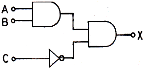
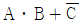
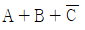
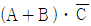
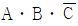
(정답률: 56%)
55. 자동제어의 분류 중 미사일의 유도제어는 어디에 속하는가?
- 자동조정
- 서보기구
- 시퀀스제어
- 프로세스제어
(정답률: 60%)
56. 어떤 코일에 흐르는 전류가 0.1초 사이에 50A에서 10A로 변할 때 40V의 유도 기전력이 발생한다면 이 때 코일의 자기 인덕턴스는 몇 mH인가?
- 100
- 200
- 300
- 400
(정답률: 35%)
57. 100μF의 콘덴서에 1000V의 직류 전압을 인가하면 충전되는 전하량(C)은 얼마인가?
- 1
- 10
- 0.1
- 0.01
(정답률: 57%)
58. 직류전동기를 급정지 또는 역전시키는 전기적 제동법은?
- 역상 제동
- 회생 제동
- 발전 제동
- 단상 제동
(정답률: 78%)
59. 블록선도의 구성요소에서 그림과 같은 블록선도를 무엇이라 하는가?
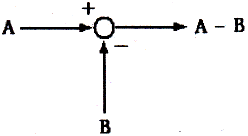
- 블록
- 가산점
- 인출점
- 직렬결합
(정답률: 75%)
60. 실리콘 정류 소자(SCR)에 관한 설명으로 틀린 것은?
- PNPN 소자이다.
- 스위칭 소자이다.
- 쌍방향성 소자이다.
- 직류, 교류 전력제어에 사용된다.
(정답률: 60%)
4과목: 기계정비 일반
61. 원심펌프의 이상 현상 원인이 아닌 것은?
- 스터핑박스로 공기 침입
- 펌프의 회전방향이 틀릴 때
- 패킹과 주축간의 과도한 틈새
- 펌프 내 공기빼기를 하였을 때
(정답률: 74%)
62. 원심형 통풍기 중 고속도로 터널 환풍기에 사용되며 효율이 가장 좋은 통풍기는?
- 터보 통풍기
- 실로코 통풍기
- 용적식 통풍기
- 플레이트 통풍기
(정답률: 75%)
63. 펌프의 비속도(specific speed : Ns) 특성을 설명한 것 중 옳은 것은?
- 양정과 토출량은 비속도와 관계가 없다.
- 양정이 낮고 토출량이 큰 펌프는 비속도가 낮아진다.
- 양정이 높고 토출량이 적은 펌프는 비속도가 낮아진다.
- 토출량이 일정하고 회전수가 큰 펌프는 비속도가 낮아진다.
(정답률: 62%)
64. V벨트 전동장치에서 V벨트를 선정하려 할 때 고려하지 않아도 되는 것은?
- V벨트의 장력
- 소요벨트의 가닥수
- V벨트의 종류 및 형식
- V벨트 풀리의 형상과 지름
(정답률: 57%)
65. 로크 너트는 무엇을 방지하기 위한 것인가?
- 부식
- 풀림
- 고착
- 파손
(정답률: 82%)
66. 압축기 부품 중 밸브의 분해조립에 대한 내용으로 틀린 것은?
- 밸브 볼트의 너트는 규정값으로 조인다.
- 밸브 볼트의 와셔는 분해 후 재사용한다.
- 스프링의 내외주가 스프링 홈 벽과 잘 맞는지 확인한다.
- 밸브 플레이트의 리프트는 규정값에 들어 있는가를 틈새로 확인한다.
(정답률: 80%)
67. 플렉시블 커플링(flexible coupling)을 사용하는 이유로 적합하지 않는 것은?
- 고속회전으로 인한 진동을 완화시킬 때
- 전달토크의 변동으로 축에 충격이 가해질 때
- 두 축의 중심을 완전히 일치시키기 어려울 때
- 축 방향으로 인장력이 작용하는 긴 전동축에 사용할 때
(정답률: 58%)
68. 분해 중에 볼트가 부러졌을 때 부러진 볼트를 제거하는 방법은?
- 토크 미터를 이용하여 제거한다.
- 스크류 익스트랙터를 이용하여 제거한다.
- 볼트 밑 부분을 정으로 잘라 넓힌 후 해머를 이용하여 제거한다.
- 두 개의 해머를 이용하여 볼트 머리부의 대면을 두드려서 제거한다.
(정답률: 79%)
69. 이의 맞물림이 원활하여 이의 변형과 진동, 소음이 작고 큰 동력의 전달과 고속운전에 적합한 기어는?
- 웜 기어(worm gear)
- 스퍼 기어(spur gear)
- 헬리컬 기어(helical gear)
- 크라운 기어(crown gear)
(정답률: 63%)
70. 관로에 유속의 급격한 변화 및 정전에 의한 펌프의 동력이 급히 차단될 때 관내 압력이 상승 또는 하강하는 현상은?
- 서징(surging)현상
- 수격(water hammer)현상
- 베이퍼 록(vapor rock)현상
- 캐비테이션(cavitation)현상
(정답률: 74%)
71. 밸브에 대한 설명으로 옳은 것은?
- 글로브 밸브는 밸브 박스가 구형으로 되어 있고 밸브의 개도를 조절해서 교축기구로 쓰인다.
- 슬루스 밸브는 유체의 역류를 방지하기 위한 밸브이며 리프트식과 스윙식이 있다.
- 체크밸브는 전두부(핸들)를 90도 회전시킴으로써 유로의 개폐를 신속히 할 수 있다.
- 콕(cock)은 밸브 박스의 밸브 시트와 평행으로 작동하고 흐름에 대해 수직으로 개폐를 한다.
(정답률: 64%)
72. 체인의 고속, 중하중 용에 적합한 급유 방법은?
- 적하 급유
- 유욕 윤활
- 강제 펌프 윤활
- 회전판에 의한 윤활
(정답률: 45%)
73. 다음 중 캐비테이션의 방지 대책으로 틀린 것은?
- 흡입양정을 작게 한다.
- 펌프의 회전수를 높게 한다.
- 펌프의 설치 위치를 낮게 한다.
- 단 흡입형 펌프이면 양 흡입형 펌프로 고친다.
(정답률: 66%)
74. 다음 정비용 공구 중 체결용 공구가 아닌 것은?
- L - 렌치
- 기어 풀리
- 양구 스패너
- 조합 스패너
(정답률: 83%)
75. 전동기의 운전 중 점검 항목으로 볼 수 없는 것은?
- 전압 상태
- 회전수 상태
- 베어링 온도 상태
- 브러시 습동 상태
(정답률: 64%)
76. 관이음(pipe Joint)의 종류가 아닌 것은?
- 나사이음
- 신축이음
- 수막이음
- 플랜지이음
(정답률: 63%)
77. 테이퍼 핀을 밑에서 때려서 뺄 수 없을 경우에 적합한 분해 방법?
- 테이퍼 핀을 정으로 잘라서 뺀다.
- 스크류 익스트랙터를 사용하여 뺀다.
- 테이퍼 핀 머리부분에 용접을 하여 뺀다.
- 테이퍼 핀 머리부분에 나사를 내어 너트를 걸어 뺀다.
(정답률: 67%)
78. 생 이음이라고도 하며, 파이프에 나사를 절삭하지 않고 이음하는 것으로 숙련이 필요하지 않으며 시간과 공정이 절약되는 관이음은?
- 신축 이음
- 고무 이음
- 패킹 이음
- 턱걸이 이음
(정답률: 57%)
79. 다음 중 충격과 진동을 완화시켜주는 플렉시블 커플링이 아닌 것은?
- 고무 커플링
- 체인 커플링
- 기어 커플링
- 플랜지 커플링
(정답률: 48%)
80. 송풍기의 회전수가 1200rpm이고 풍량이 2400m3min 일 때, 회전수를 1800rpm으로 변환시키면 풍량은 몇 m3/min 인가?
- 3000
- 3200
- 3400
- 3600
(정답률: 71%)